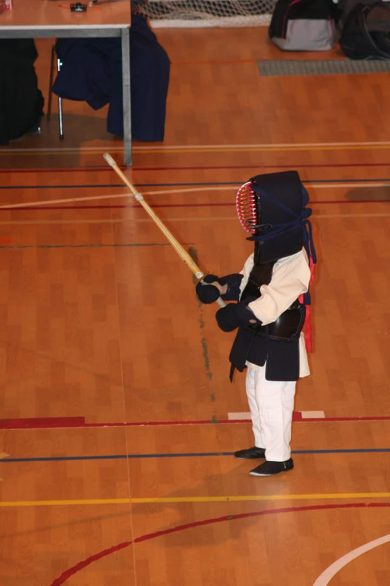
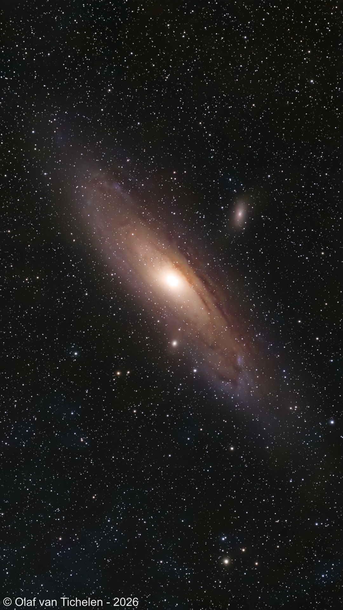

About me
Hello! I am Olaf, a 1st year student of Applied Computer Science at UCLL based in Belgium. In my spare time, I enjoy gaming, Kendo, and stargazing.
Kendo
I am a Nidan (2nd blackbelt) in kendo. I have been practicing for 12 years, ever since I was a kid. What started as a trial to keep myself busy has grown into something important in my life.

Stargazing
I have been making images of the stars for 3+ years with my phone and telescope. In 2026, I bought a smart telescope in order to make better images. You can find them in the image gallery!
